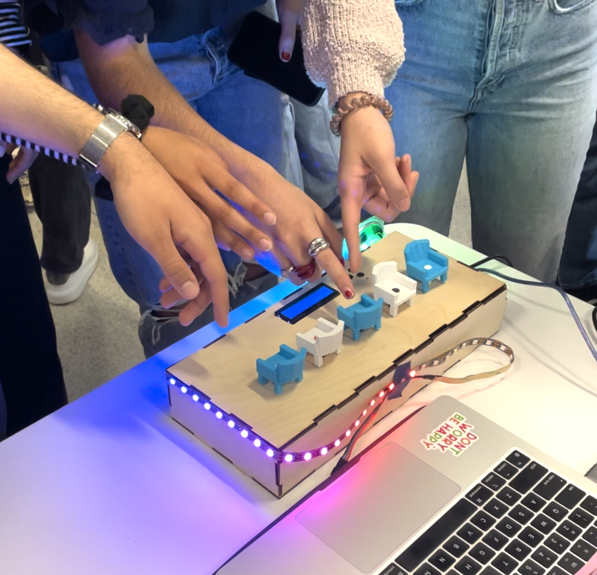
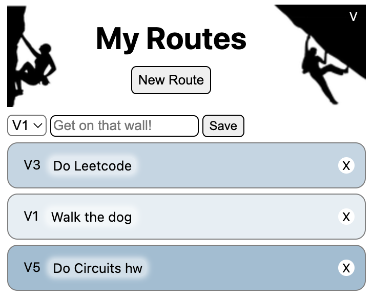
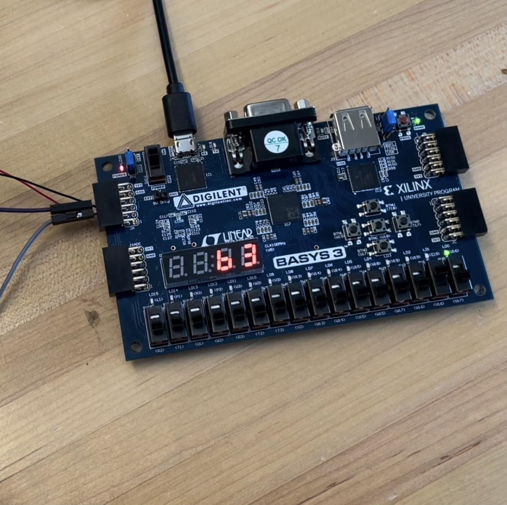
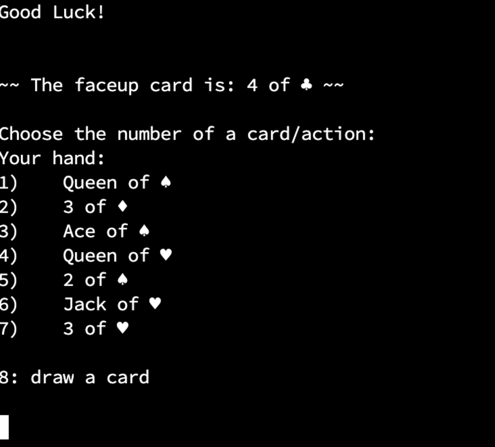

Projects

Mini Musical Chairs
A finger-operated Arduino game built for an end-of-semester expo, combining hardware signals, playful interaction, and team-led product development.

ToSend List
A climbing-themed to-do list browser extension that turns task management into a more visual and personal experience.

FPGA Piano
A collaborative FPGA build for digital systems lab that translated hardware logic into a working, playable piano.

Crazy Eights
A Java implementation of Uno-style gameplay with custom rules, suit differentiation, and a clean, self-contained card game system.